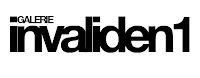

Adiós amigo de Sergio Belinchón
miércoles, 23 de enero de 2013
Exposición personal de Sergio Belinchón
1 febrero-16 marzo, 2013
Inauguración / Jueves, 31 de enero 2013, 18:00 a 21:00
{kind=link}
{kind=link}

Invaliden1 Galerie presenta en la exposición individual el vídeo "Adiós Amigo!" por el artista español Sergio Belinchón.
Adiós Amigo! revisa la historia del Spaghetti Western rodado en la zona de Huesca, España, en los años 1960 y 1970. En Invaliden1, Belinchón presenta los trabajos de fotografía y vídeo analizando el mundo de la ilusión que se ha creado como una copia del oeste americano, y ahora ha dejado atrás sus ruinas.
Por un puñado de dólares dirigida por Sergio Leone en 1964 fue considerado por la crítica como una película de un nuevo género: el spaghetti western. Después de esta producción en las próximas dos décadas, más de 600 otras películas fueron fusilados, muchos de ellos en España. Los Spaghetti Westerns eran conocidos como producciones de bajo presupuesto que se basaban en los antecedentes históricos del oeste americano y modificado mediante la adición de mentalidad mediterránea. Siendo producidos durante años este género se convirtió en parte de la historia del cine, así como de la vida española en los ámbitos de la producción cinematográfica. Adiós Amigo! es una parte de la obra del artista que se ocupa de la historia de Spaghetti Westerns que crearon pueblos fantasma abandonados en el panorama español actual. El video muestra a un vaquero solitario a caballo a través del desierto de Huesca, pasando por pueblos vacíos para finalmente termina montando su caballo en una moderna autopista vacía que divide brutalmente el paisaje. Como en un típico occidental, el vaquero cruza un río que lo lleva a la tierra prometida. Buscando una vida mejor, el hombre y su caballo parece estar perdidos y desplazados. Las fotografías de la serie funcionan simbólicamente, haciendo hincapié en la ambivalencia entre ser retenido por la realidad, en este caso por la arquitectura moderna, y la eterna esperanza de encontrar una vida mejor en el oeste. Por primera vez se abre al público y es el artista del guión gráfico y la documentación que explora la fase de investigación del proyecto. Los carteles originales de las películas rodadas en la región de Huesca y el storyboard no sólo explican una parte de la historia del cine, pero demuestra Belinchón el camino a través del misterio de esta construcción cultural que grabó la imagen del género del oeste. Como parte de la documentación que el artista presenta además realiza un sondeo más profundo en la historia de los spaghetti westerns. El yanqui es un documental siguiendo la historia de la villa de Alcolea de Cinca, en la provincia de Huesca, donde la película original de Yankee fue filmado por el director italiano Tinto Brass en 1966. Belinchón traza los recuerdos emocionales de los participantes locales a la película y entrevistas de la generación más joven que nunca ha oído hablar de esto antes de western. Esta diferencia pone de manifiesto el poder de la dinámica cultural que producen los temas y lugares que evolucionan y desaparecen en poco tiempo dejando sin resolver ciertas consecuencias. El bueno, el feo y el malo es un trabajo de video basado en la película con el mismo título por Sergio Leone en 1966. Belinchón arreglado el remake de la película original siguiendo estrictamente fotograma a fotograma manteniendo los diálogos, pero dejando de lado los personajes. El foco de la película cambia a sus paisajes y el vacío de sus lugares. Al igual que en sus obras Belinchón juega en el montaje de la exposición con la idea de la realidad y la representación - delante y detrás de las escenas. Por lo tanto, también la pantalla principal para el trabajo de vídeo Adiós Amigo! puede ser visto desde el lado frontal, así como su construcción por detrás, como en un conjunto común de cine.
ACTIVIDAD realizada con la ayuda del Ministerio de Cultura, Educación y Deporte de España
invaliden1 Galerie is proud to announce the solo exhibition Adiós Amigo! by the Spanish artist Sergio Belinchón. Adiós Amigo! reviews the story of Spaghetti Western filmed in the area of Huesca, Spain, in the 1960s and 1970s. At invaliden1 Belinchón presents photography and video works analyzing the illusionary world that was created as a copy of the American West and now has left behind its ruins.
A Fistful of Dollars directed by Sergio Leone in 1964 was considered by the critics as a film of a new genre: the Spaghetti Western. After this production in the next two decades over 600 other films were shot, many of them in Spain. The Spaghetti Westerns were known as low budget productions that were based on the historical background of American West and modified by adding Mediterranean mentality. Being produced over years this genre became part of the film history as well as of the Spanish life in the areas of film production.
Adiós Amigo! is a part of the artist´s oeuvre dealing with the story of Spaghetti Westerns that created ghost towns now abandoned in the modern Spanish landscape. The video shows a lonely cowboy riding through Huesca´s desert, passing by empty towns to finally end up riding his horse onto a modern empty highway that brutally bisects the landscape. As in a typical western, the cowboy crosses a river that leads him to the promised land. Looking for a better life, the man and his horse seem to be both lost and displaced.
The photographs of the series function symbolically emphasizing the ambivalence between being held back by reality, in this case by modern architecture, and the eternal hope to find better life in the west.
For the first time open to the public is the artist´s storyboard and documentation that explores the research phase of the project. The original posters from the films shot in the region of Huesca and the storyboard not only explain a part of film history, but demonstrate Belinchón´s path through the mystery of this cultural construction that engraved the common image of the entire western genre.
As part of the documentation the artist presents further works probing deeper into the history of Spaghetti Westerns. El Yankee is a documentary following the story of the village Alcolea de Cinca, in the province of Huesca where the original film Yankee was filmed by the Italian director Tinto Brass in 1966. Belinchón traces the emotional memories of the local participants to the film and interviews the younger generation that has never heard of this western before. This discrepancy highlights the power of cultural dynamics producing themes and places that evolve and disappear within short time leaving certain consequences unsolved.
The Good, The Bad and The Ugly is a video work based on the same titled film by Sergio Leone from 1966. Belinchón arranged the remake by following the original film strictly frame-by-frame keeping the dialogues, but leaving out the characters. The focus of the film shifts to its landscapes and emptiness of its places.
As in his works Belinchón plays in the installation of the exhibition with the idea of reality and representation - in front and behind the scenes. Thus, also the main screen for the video work Adiós Amigo! can be viewed from the front side as well as its construction from behind as in a common cinema set.